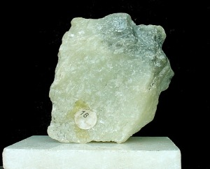
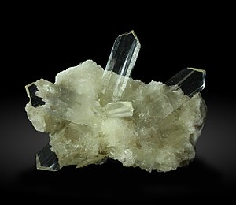
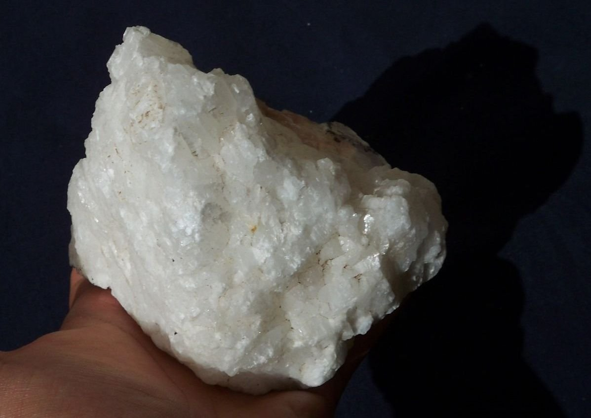
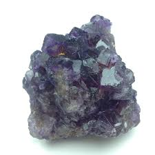
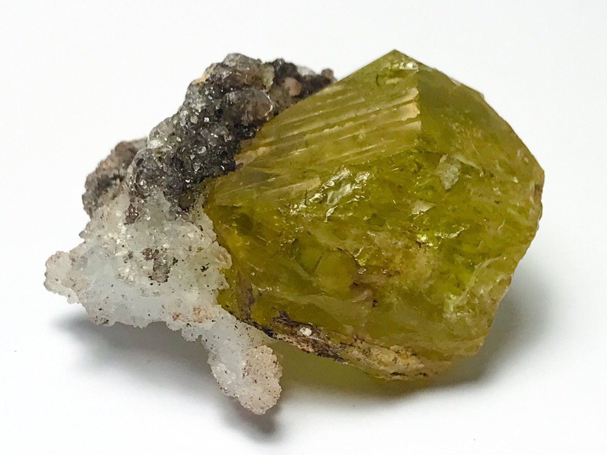
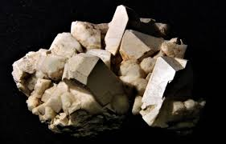
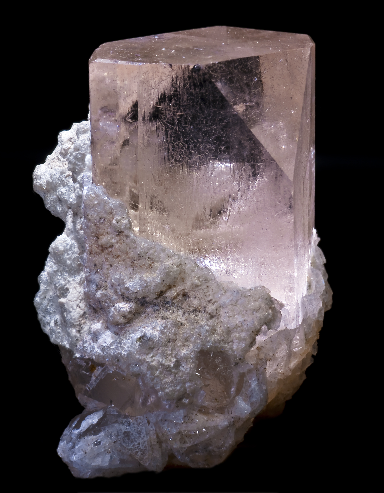

Vamos a utilizar los diferentes tipos de selectores en CSS
| Dureza | Mineral | Imágen |
| 1 | Talco |  |
| 2 | Yeso |  |
| 3 | Calcita |  |
| 4 | Fluorita |  |
| 5 | Apatito |  |
| 6 | Ortosa |  |
| 7 | Cuarzo | |
| 8 | Topacio |  |
| 9 | Corindon | |
| 10 | Diamante | |
Práctica realizada por Mª Victoria Montero Alcantara